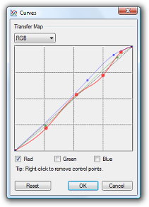
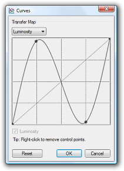
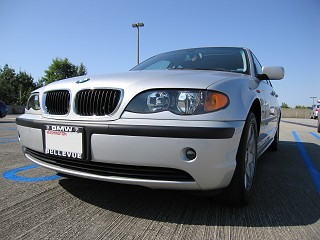

Curves Adjustment
 The Curves adjustment
can be used to adjust the colors of an image with a very high degree of
control. Curves allows you to fine tune the intensity of every shade in an
image. In particular, it can be used to highlight or dim only certain ranges
of intensity present in an image in a way that Levels
and
Brightness / Contrast cannot.
The Curves adjustment
can be used to adjust the colors of an image with a very high degree of
control. Curves allows you to fine tune the intensity of every shade in an
image. In particular, it can be used to highlight or dim only certain ranges
of intensity present in an image in a way that Levels
and
Brightness / Contrast cannot.
Unlike Levels and Brightness / Contrast, Curves can be used to freely adjust the exactly how bright each shade of intensity in an image can be. In fact, the colors of an image can be completely inverted using curves.
Interface
Curves lets you remaps the colors of and image using control points on a graph, as shown on the right and in the examples below. When the Curves dialog first appears, it will have the graph shown on the right. This graph is simply a function in the mathematical sense. The horizontal values are the intensity input, and the vertical values are the intensity output.
Simply, this means that reshaping the right half of the curve effects the brighter half of the image, reshaping the left half effects the darker half of and image. Moving a curve above its default position on the diagonal guide line will cause the affected areas to brighten, moving a curve below its default position on the diagonal guide line will cause affected areas to darken.
Control points are used to affect the curve. Control points are added by clicking anywhere that there is not currently a control point. Control points may be removed by right-clicking on the desired control point. To move a control point, simple click and drag the control point to the desired new location. Note that it is not possible to have two control points vertically in line with each other, as this would mean that a given intensity of color would be both brightened and darkened (which isn't possible).
Below is an example of using Curves to adjust an image. The original image is shown on the left, and the image adjusted with Curves is shown on the right. The curve drawn in the Curves adjustment shows that the darker shades of the image should be darkened and the lighter shades should be lightened. The result is a picture that has deeper darks and bolder brights, while still preserving all the definition of the original image.


Multichannel Adjustments
By default, Curves uses the luminosity of an image to adjust the
intensities. Alternatively, this can be performed using the Red, Green, and
Blue channels of an image by selecting "RGB" from the drop down list near
the top of the dialog box.
When this mode is selected, new control points will apply to the color
channels selected with the checkboxes near the bottom of the dialog. To work
with an individual channel or pair of channels, simple change which channels
are selected using the checkboxes.
The picture below has been adjusted with Curves to increase the contrast and saturation of the image, and to specifically compensate for the already saturated portions of the dog's fur by lowering the intensity of some of the brighter reds. Note that the image has bolder colors, deeper dark areas, and does not appear as grey as the original.


Other Possibilities
As stated above, you can even use Curves to invert an image. In the example below, a picture of a car was adjusted using Curves to produce a result that is not possible with the other adjustments, such as Levels or Hue / Saturation:


Copyright © 2007
Rick Brewster, Tom Jackson, and past contributors. Portions Copyright
© 2007 Microsoft Corporation. All Rights
Reserved.